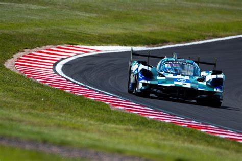

Diáñez Motorsport
Sobre Nosotros
Bienvenidos a Diañez Motorsport, donde la pasión por la velocidad y la excelencia en el motorsport se encuentran. Desde nuestros humildes comienzos, hemos crecido hasta convertirnos en un nombre respetado en el mundo del automovilismo, gracias a nuestro compromiso inquebrantable con la calidad, la innovación y el rendimiento.
En Diañez Motorsport, vivimos y respiramos la emoción de las carreras. Nuestro equipo está compuesto por profesionales dedicados y entusiastas del motorsport que trabajan incansablemente para ofrecer productos y servicios de la más alta calidad. Ya sea que estés buscando piezas de alto rendimiento, asesoramiento técnico experto o simplemente compartir tu amor por el automovilismo, estamos aquí para ayudarte a alcanzar tus metas.
Formula
Las carreras de coches tipo fórmula, como la Fórmula 1, son competiciones de automovilismo de alta velocidad que se llevan a cabo en circuitos cerrados. Estos coches son monoplazas, diseñados específicamente para alcanzar velocidades extremas
LEER MÁSResistencia
Las carreras de resistencia de coches, también conocidas como "endurance racing", son una modalidad del automovilismo que se centra en la durabilidad y la fiabilidad de los vehículos
LEER MÁS